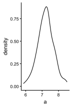
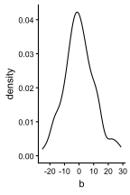
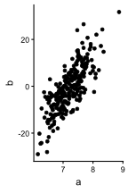
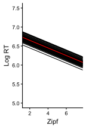
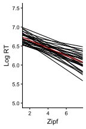
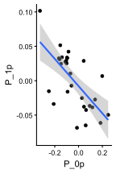

library(lme4) # for fitting LMMs
library(dplyr) # for data wrangling
library(tidyr) # for data wrangling
library(readr) # for importing data
library(faux) # for simulating multivariate normals
library(ggplot2) # for plotting4 LMMs: Random Correlations
4.1 What are Random Correlations?
In the last section, we saw how we can simulate not only random variability between participants’ overall response times, but also variability in the magnitude of slopes. We did this by modelling both \(P_{0p}\) (random intercepts) and \(P_{1p}\) (random slopes):
\[logRT_{ip} = \beta_0 + I_{0i} + P_{0p} + (\beta_1 + P_{1p}) Zipf_{ip} + e_{ip}\]
We simulated the random effects by drawing from independent normal distributions. However, this assumes that random intercepts and slopes are uncorrelated. It’s not unreasonable to expect that there might actually be a correlation here. For example, people who respond more quickly may also show a larger effect of word frequency.
We can simulate these relationships by drawing \(P_{0p}\) and \(P_{1p}\) from multivariate normal distributions:
\[ \begin{pmatrix} P_{0p} \\ P_{1p} \end{pmatrix} \sim \mathcal{N}\!\left(\mathbf{0},\, \Sigma_P\right) \\ \]
Rather than a single standard deviation, as we’ve seen so far, \(\Sigma_P\) is a covariance matrix, describing the standard deviations (variances) of \(P_0\) and \(P_1\) on the diagonal, and the covariances on the upper and lower triangle.
\[ \Sigma_P = \begin{pmatrix} \sigma^2_{P0} & \sigma_{P01} \\ \sigma_{P01} & \sigma^2_{P1} \end{pmatrix} \]
Another way of writing the covariances is as correlations (\(\rho\)) multiplied by the standard deviations \(\sigma_{P0}\) and \(\sigma_{P1}\):
\[ \Sigma_P = \begin{pmatrix} \sigma^2_{P0} & \rho_P \sigma_{P0} \sigma_{P1} \\ \rho_P \sigma_{P0} \sigma_{P1} & \sigma^2_{P1} \end{pmatrix} \]
We will continue to simulate the item random intercepts and the residuals as just independent normal distributions:
\[\begin{aligned} I_{0i} &\sim \mathcal{N}(0, \sigma_{I0}) \\ e_{ip} &\sim \mathcal{N}(0, \sigma_e) \end{aligned}\]
4.2 Packages
We’ll use the following packages in this section:
4.3 Simulating Multivariate Normals
To simulate multivariate normal distributions, we can no longer use rnorm(). Instead, we can use the rnorm_multi() function from faux (DeBruine 2020).
For example, to simulate observations from two normally distributed variables, a and b, with a correlation of 0.76, we can do the following:
# number of observations
n_ab <- 250
# means of the normal distributions
mu_a <- 7.2
mu_b <- 0
# SDs of the normal distributions
sigma_a <- 0.5
sigma_b <- 10
# correlation of the normal distributions
r_ab <- 0.76
# simulate observations
ab_df <- rnorm_multi(
# number of observations
n = n_ab,
# number of variables
vars = 2,
varnames = c("a", "b"),
# means
mu = c(mu_a, mu_b),
# SDs
sd = c(sigma_a, sigma_b),
# correlation
r = r_ab
) |>
as_tibble()
print(ab_df)# A tibble: 250 × 2
a b
<dbl> <dbl>
1 6.87 -6.32
2 7.41 -7.04
3 7.20 -6.32
4 6.23 -14.8
5 7.76 7.21
6 6.82 -9.77
7 6.69 -5.58
8 6.88 -0.732
9 7.12 1.19
10 6.97 -15.3
# ℹ 240 more rowsIf we plot the simulated observations, we can indeed see that a and b are Gaussian and correlated:
# (a)
ggplot(ab_df, aes(a)) +
geom_density()
# (b)
ggplot(ab_df, aes(b)) +
geom_density()
# (c)
ggplot(ab_df, aes(a, b)) +
geom_point()


Note
Above, we passed a single correlation to the r argument. In cases where you have more than 2 variables, you can pass a full correlation matrix.
Show example
rnorm_multi(
# number of observations
n = 1000,
# number of variables
vars = 3,
# means
mu = c(0, 10, 4.2),
# SDs
sd = c(1, 7, 2.5),
# correlation
r = matrix(data=c(
1, 0.5, 0.21,
0.5, 1, 0.7,
0.21, 0.7, 1
), nrow=3)
)4.4 Defining Parameters
These are the parameters that I suggest for this simulation. These are the same as before, except now we also have the correlation between s_P0 and s_P1, which I’ve called r_P. I’ve set this to -.74, meaning that participants with larger (slower) average response times should also have a reduced effect of word frequency.
# Fixed-effect intercept and slope
# (same as the parameters in the section on linear models)
b_0 <- 6.85
b_1 <- -0.1
# SD of per-item random intercepts
s_I0 <- 0.08
# SD of per-participant random intercepts
s_P0 <- 0.16
s_P1 <- 0.04
r_P <- -0.74
# residual SD
s_e <- 0.334.6 Visualising Random Effects
If we now visualise the variability between items and participants, you can see that participants with faster response times also tend to have steeper slopes in the effect of Zipf:
# (a)
ggplot(items) +
geom_abline(aes(intercept = b_0+I_0i, slope=b_1, group=i_id)) +
geom_abline(intercept=b_0, slope=b_1, colour="red") +
lims(x=c(1.5, 7.5), y=c(5, 7.5)) +
labs(x="Zipf", y="Log RT")
# (b)
ggplot(participants) +
geom_abline(aes(intercept = b_0+P_0p, slope=b_1+P_1p, group=p_id)) +
geom_abline(intercept=b_0, slope=b_1, colour="red") +
lims(x=c(1.5, 7.5), y=c(5, 7.5)) +
labs(x="Zipf", y="Log RT")
# (c)
ggplot(participants, aes(P_0p, P_1p)) +
geom_point() +
geom_smooth(method="lm")`geom_smooth()` using formula = 'y ~ x'


As before, the red line shows the fixed effect, while the black lines show variability between (a) items and (b) participants. The blue line in the last panel shows the relationship between \(P_{0p}\) and \(P_{1p}\).
4.7 Simulating Trials and Responses
These sections are actually identical to what we did before. We get all combinations of items and participants, and then simulate:
- \(e_{ip}\) (
e_ip) as random noise of mean 0 and SD \(\sigma_e\) (s_e) - \(log_rt\) using the equation at the top
# generate trials
trials <- crossing(items, participants) |>
mutate(
e_ip = rnorm(n(), 0, s_e),
log_rt = b_0 + I_0i + P_0p + (b_1 + P_1p) * zipf + e_ip
)
# print the first few rows
print(trials)# A tibble: 1,500 × 8
i_id zipf I_0i P_0p P_1p p_id e_ip log_rt
<int> <dbl> <dbl> <dbl> <dbl> <int> <dbl> <dbl>
1 1 4.50 0.0372 -0.260 0.0457 19 -0.569 5.81
2 1 4.50 0.0372 -0.251 0.0710 27 -0.0401 6.47
3 1 4.50 0.0372 -0.241 0.0461 4 0.217 6.62
4 1 4.50 0.0372 -0.236 0.0282 7 -0.353 5.97
5 1 4.50 0.0372 -0.222 0.0172 24 -0.126 6.17
6 1 4.50 0.0372 -0.167 0.0328 18 -0.382 6.04
7 1 4.50 0.0372 -0.161 0.0447 22 -0.229 6.25
8 1 4.50 0.0372 -0.156 0.0100 5 -0.115 6.21
9 1 4.50 0.0372 -0.106 0.0443 13 0.669 7.20
10 1 4.50 0.0372 -0.104 0.0330 9 0.718 7.20
# ℹ 1,490 more rows4.8 Parameter Retrieval
To fit a model that can estimate the simulated random correlation, we can now use one single bar (|) rather than double bars (||). This tells lme4 to estimate and account for the influence of random correlations:
Show code
m <- lmer(
log_rt ~ 1 + zipf +
(1 | i_id) +
(1 + zipf | p_id),
data = trials
)Show output
Warning in checkConv(attr(opt, "derivs"), opt$par, ctrl = control$checkConv, : Model failed to converge with max|grad| = 0.00261039 (tol = 0.002, component 1)
See ?lme4::convergence and ?lme4::troubleshooting.Show code
summary(m)Show output
Linear mixed model fit by REML ['lmerMod']
Formula: log_rt ~ 1 + zipf + (1 | i_id) + (1 + zipf | p_id)
Data: trials
REML criterion at convergence: 1087.7
Scaled residuals:
Min 1Q Median 3Q Max
-3.01026 -0.66410 -0.01311 0.64892 3.14724
Random effects:
Groups Name Variance Std.Dev. Corr
i_id (Intercept) 0.004553 0.06748
p_id (Intercept) 0.027330 0.16532
zipf 0.002030 0.04506 -0.78
Residual 0.110157 0.33190
Number of obs: 1500, groups: i_id, 50; p_id, 30
Fixed effects:
Estimate Std. Error t value
(Intercept) 6.81706 0.05354 127.329
zipf -0.09476 0.01215 -7.797
Correlation of Fixed Effects:
(Intr)
zipf -0.880
optimizer (nloptwrap) convergence code: 0 (OK)
Model failed to converge with max|grad| = 0.00261039 (tol = 0.002, component 1)
See ?lme4::convergence and ?lme4::troubleshooting.